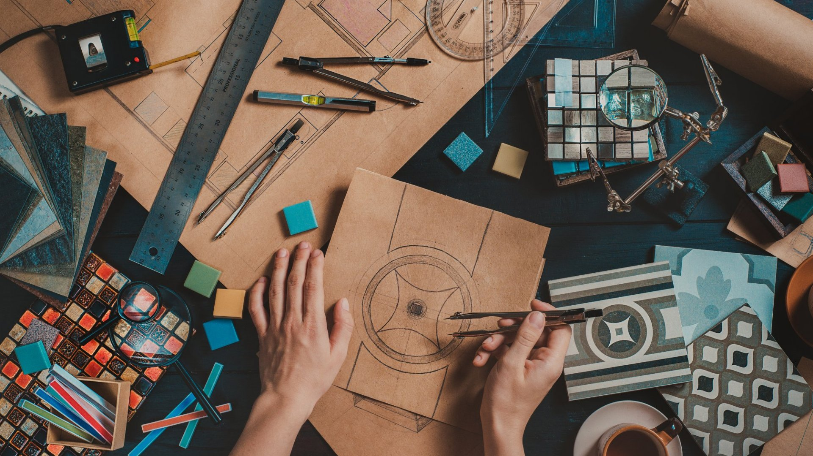

Overview
Purpose
The purpose is to help users create ideas. It provides a process by which ideas can be produced for any medium
Audience
The website is for those stuck in some version of creator's block. Those that need or want an idea, but can't find one.
Branding
Website Logo
Style Guide
Color Palette
Palette URL: https://coolors.co/e9e5c2-8eb9a6-156e58-f4cd64-f28327| Primary | Secondary | Accent 1 | Accent 2 | |
|---|---|---|---|---|
| Accent 3 | ||||
| #E9E5C2 | #8EB9A6 | #156E58 | #F4CD64 | #F28327 |
Typography
Heading Font: sansita swashed
Paragraph Font: sansita, marcellus
Normal paragraph example
We've all been in the scenario where we need to write an essay, but with no ideas to speak of that would make us want to write more than one page. Whether for school, work, or creative endeavors, they all start from a kernel of an idea. My goal is to help you find that kernel.
Colored paragraph example
If you find just the right source, even the most mundane and tedious assignment can create an easy flow of inspiration from start to finish.
Navigation
Site Map
Content
Home page
A Untapped Well of Ideas We all know an "idea man". Someone everyone goes to when in a creative block. Think of this process as your idea man, a guide to find your muse. Pick a Point of Interest Find something that sticks out to you Ask Any and All Questions Challenge your brain to think outside the box Repeat... Keep using the first two steps to fully flesh-out the idea Finding a Muse Depending on what you want an idea for, we all have something that perks our interest. For work and school, the point of intrigue is a little more contained in possibilites. This may make your job easier or harder depending on what project you are currently working on. As for more creative works, the ideas are open-ended. There in lies the problem. With limitless possibilites, it can be difficult to direct your thought process to only one. For this process, choose something you've come across that sparks curiousity. Anything from a science fact to a single word can produce this spark. Outside of the Box Great, you've chosen a starting point. The next step is to expand on the interest you found. You do this by asking questions. No matter how obvious the question may seem, it's helping direct your mind to a more substantial thought process. Some questions can remain unanswered, but it's best to answer the question that spark the most curiosity. Repeat Continue finding point of interest and asking numerous questions. You can stop this process when you feel ready to put your new idea to use.
Images for the Home page
Examples
Headline: My Process Results Paragraphs: Stories A short story I've written all stemmed from learning about the Korean War. I had never heard of it previously, but its other title the "Forgotten War" truly stood out. I asked questions such as: "who was involved in this war?" "why was it forgotten?" "did anything bizarre happen in the war or its aftermath?" Art piece I had seen many videos of dioramas being made and found the process fascinating. I happened to have a styrofoam pumpkin that I thought would make a good base. My questions were as follows: "what are common plant related dioramas?" "Can I make it a holiday decoration?" "What materials do I have on hand or would be easy to get?" School assignment For a cooking class I took part in in highschool, I was made to create a dessert recipe with a random set of ingredients I was given. Aside from those guidelines, we were free to be as creative as we wanted. I loved learning how to make a cake roll and wanted to make one again. The questions my group had to ask were the following:"How do we make use of the more unusual ingredients?" "Can we combine these two items since they are similar?" "Will this items texture be noticed in the cake?"
Images for the Page 2
Pracice
Headline: Practice Form Medium: Select form: Essay, Art Piece, Presentation, Story (Novel, Short, Script, etc.), Game, other Other option text box Point of interest What has grabbed your attention? Is it related to the medium or in general? text box for user input Questions Try to type as many questions as you can about this interest text box for user input
Images for the Page 3
Wireframes
Create three wireframes for your site. One for each page and list them here
Home
[Any additional details about home that the wireframe does not make clear]
.png)
Examples
[Any additional details about page 2 that the wireframe does not make clear]
.png)
Practice
[Any additional details about page 3 that the wireframe does not make clear]
.png)